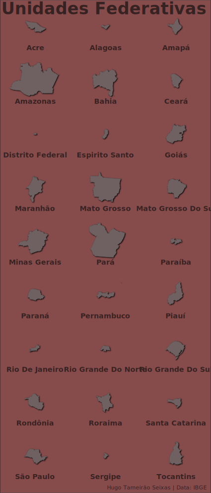

Services
I am a professional with over 5 years of experience with research and data analysis. My skills include:
- Data manipulation: cleaning and organizing data to an analysis-ready state (including spatial data);
- Data visualization: high quality figures to communicate results (including interactive figures);
- Exploratory analysis: examine characteristics of data to improve understanding of phenomena involved with the data;
- Statistical inference: making statistical inferences of various kinds, using modern computing techniques
- Modeling: developing models for prediction and classification;
- Communication: writing technical and scientific documents in various formats (including reproducible reports);
If you need help with your work, please contact me.
Continuous projects
- Hourly price[^hour]…($20,00 / hour)
Fixed projects
- One figure…….($50,00)
- Five Figures…..($225,00)
- Ten figures…….($400,00)
- Report………..($500,00)
Reports
Visualizations
